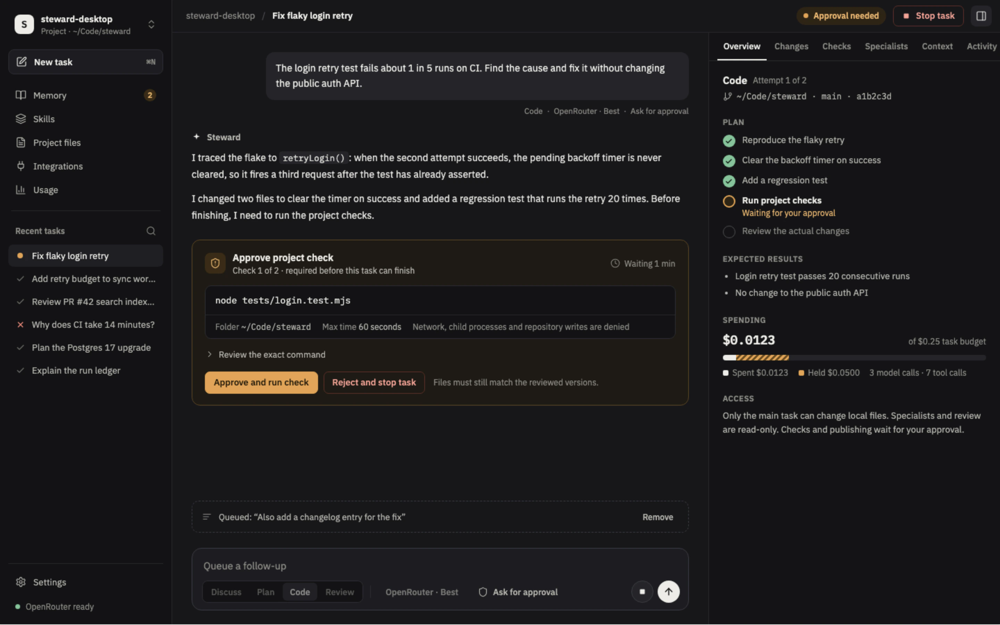
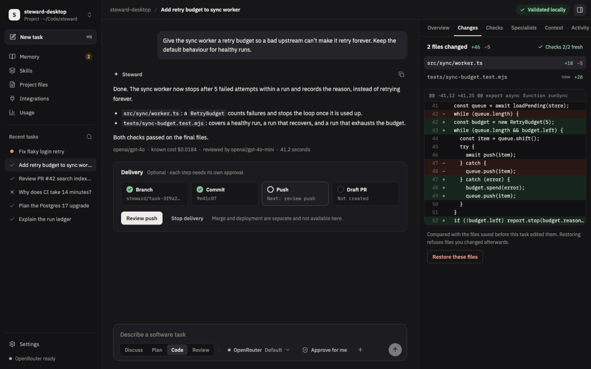
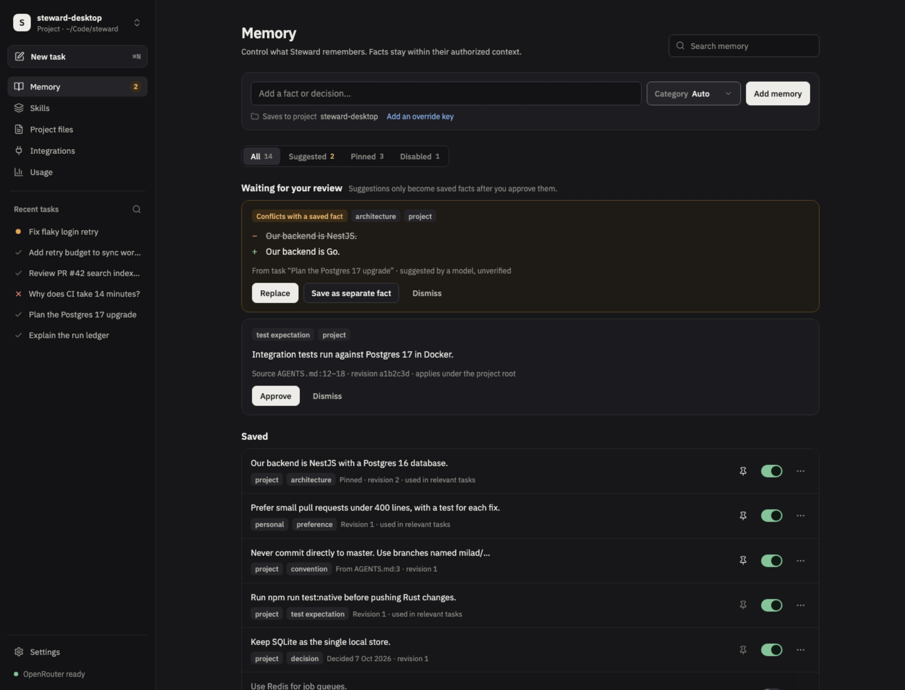
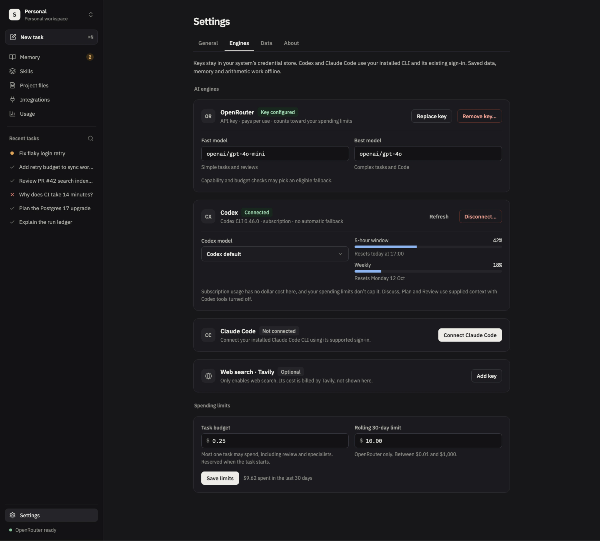

Pre-release · version 0.1.0
Understand the code. Plan the change. Verify the result.
Steward is a local-first desktop app for software engineering. Discuss, plan, code and review with your own AI engines, while your projects, memory and keys stay on your machine.

Tasks
Four actions. Only Code edits files.
Choose what Steward should do, separately from which model does it. Discuss, Plan and Review keep your source read-only.
-
Discuss
Work through code, requirements and architecture with your project's context.
-
Plan
Turn a request into steps and acceptance criteria before anything changes.
-
Code
Edit a folder you attach and run only the checks you approve. Finishing needs fresh passing checks and a review of the actual changes.
-
Review
Check local code or a GitHub pull request against your own architecture and conventions.
Control
You decide how much Steward may do.
Approvals are a setting you can see, right in the composer. Full access is a separate, native-confirmed choice, and it resets when you quit.
-
Ask for approval
Approve project checks and external publishing.
-
Approve for me
Run scoped project edits and checks automatically. Broader actions still wait for you.
-
Full access
Files and shell commands across this computer, with your user permissions. Applies to Code tasks and resets when you quit Steward.
In every mode, suggested memories still need your review.
Verify
Review the real diff. Restore it if you disagree.
A Code task is not done until its checks pass on the final files and the actual changes have been reviewed. Delivery is optional: branch, commit, push and draft pull request each need their own approval, and merge and deployment stay separate.
- Checks run only after you approve the exact command, with network, child processes and repository writes denied.
- An independent model reviews the changes before the task completes.
- Restoring compares with the files saved before the task edited them, and refuses files you changed afterwards.

Memory
Memory you can read, edit and veto.
Facts you save are recalled in later tasks. Anything suggested by a model or a repository file waits for your review before it becomes a saved fact.
- Conflicts show exactly what would be replaced. Replace it, save both, or dismiss.
- Pin, switch off, edit or delete any fact.
- Saving and recalling memory works offline.

Engines
Bring your own engine. Keep your own limits.
Connect an OpenRouter key, or use your installed Codex or Claude Code CLI with its existing sign-in. Keys stay in your system's credential store.
- Choose fast and best models, then set a budget per task and a rolling 30-day limit.
- Each task reserves its budget up front, and new OpenRouter tasks pause when the window is nearly full.
- Subscription usage and optional Tavily web search are reported separately, never counted as dollars.

Trust
Your data stays on your machine.
Working data lives in a local database. Personal use needs no Steward account, hosted API, PostgreSQL, Redis or Docker.
Local storage
Projects, conversations, memory, reference files, history, approvals and usage live in SQLite in your operating system's application-data folder.
Keys in the credential store
macOS Keychain, Windows Credential Manager or the Linux Secret Service. Backups never include them.
Approvals that expire
Publishing needs approval of the exact text. Approvals expire and work once.
Read-only where it matters
Only the main Code task can change local files. Specialists and review are read-only, and checks and publishing wait for you.
Memory under your control
Suggestions wait in Memory for your approval or dismissal. Every fact can be pinned, switched off, edited or deleted.
Explicit GitHub access
Steward reads only the repositories you allow. Comments on a pull request need your approval.
Status
Pre-release, and clear about what is missing.
Built with Tauri 2, React, TypeScript and a Rust runtime, for macOS, Windows and Linux. Signed installers and update testing are part of the V1 release gate.
-
Working now
- Local planning and routing across OpenRouter, Codex and Claude Code
- Persistent memory, backups and usage tracking
- Seven built-in skills for review, explanation, analysis, research and writing
- GitHub pull request review with approvals, and optional web search
-
Not yet
- Live provider and tool acceptance testing
- Signed installers, notarization and tested updates
- Code tasks on Windows, until project-check containment is verified there. Discuss, Plan and Review work.
- Cloud sync, accounts, shared workspaces, hosted billing and server telemetry. These are later capabilities.